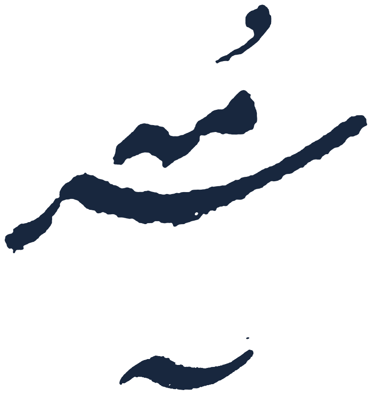

جناب آقای دکتر نوید فاضل، طراح تارنمای «سرود»
و همهٔ کسانی که در نگهداشتنِ این ابزار سهیم بودهاند
با سلام و احترام،
پیش از هر پیشنهادی، لازم میدانیم از شما سپاسگزاری کنیم. «سرود» در سالهایی ساخته شد که تشخیص ماشینیِ وزن عروضیِ شعر فارسی نه ابزار آمادهای داشت و نه بازار روشنی؛ شما با تکیه بر دانش ادبی و دستوریتان، ۷۱ وزن و ۵٬۲۱۲ ساختار آهنگی را به زبانی درآوردید که رایانه بفهمد و کاربر ببیند. این کار، به گواهی معرفی رسمی گنجور در آذر ۱۳۹۶ و بهکارگیری موتور سرود در وزنیابی ماشینیِ پیکرهای با بیش از یکونیم میلیون بیت، یک خدمت عمومی به ادبیات فارسی بوده است، نه صرفاً یک وبسایت.
ما در استودیو سرمه، از بیرون به سرود نگاه کردیم و آنچه دیدیم را بیتعارف نوشتیم. اما بیتعارف بودن، به معنای نادیدهگرفتن ارزشِ کاری نیست که یک نفر، سالها، بیسروصدا و بیچشمداشت نگه داشته است. برعکس؛ اگر این پروپوزال نوشته شده، دقیقاً به این دلیل است که سرود ارزش آن را دارد که دیده شود، دوام بیاورد و به نسل تازهای از شاعران و دانشجویان برسد.
آنچه در صفحات بعد میآید، تلاش ما برای تبدیل تشخیصهای گزارش ممیزی به راهحلهای عملی است: بیشتر بر طراحی و تجربهٔ کاربری تمرکز دارد، ساختار فنی سایت را دستنخورده میگذارد و برای هر مورد دو گزینه پیش رو مینهد تا انتخاب، با شما بماند. هرجا از سرود انتقاد کردهایم، با ارجاع به شناسهٔ مشکل در گزارش ممیزی بوده است تا هیچ پیشنهادی بیپشتوانه نماند.
امیدواریم این سند، بیش از آنکه فهرستی از «باید»ها باشد، دعوتی به گفتوگو باشد. سرود را شما ساختهاید؛ ما فقط پیشنهاد میکنیم چگونه بدرخشد.
با احترام و قدردانی،
استودیو سرمه
شهریور ۱۴۰۵

سرمه، رنگِ مرکبِ کهن است؛ تیره، عمیق و ماندگار. ما با همین نگاه کار میکنیم: محصول دیجیتالی که ریشه در فرهنگ و زبان فارسی دارد، باید هم امروزی باشد و هم اصیل. زیبایی برای ما تزئین نیست؛ حاصل درستخواندنِ محتوا، مخاطب و سنتِ بصریِ پشت آن است.
این سند سه بخش فنی هم دارد (زیرساخت، عملکرد، تحلیل) چون بدون آنها هیچ طراحیای به دست کاربر نمیرسد؛ اما تمرکز و بیشترین صفحات، بر همین سه لایه است.
هر پیشنهاد با یک یا چند شناسه مانند S-05 علامت خورده است؛ این شناسهها همان ردیفهای جدول مشکلات در گزارش ممیزی ۲۰ شهریور ۱۴۰۵ هستند.
سرود یک موتور قوی با پوستهٔ نادیده است. پیشنهاد ما، بدون دستزدن به موتور، پوسته را به سطح یک مرجع ادبیِ معاصر میرساند و همزمان چهار ریسک زیرساختی و سئویی گزارش ممیزی را میبندد.
سایت از خط اینترنت خانگی پشت یک لایهٔ CDN/تونل میرود و HTTPS معتبر میگیرد. S-01S-02S-03S-06S-15
صفحهٔ اصلی، فهرست اوزان، راهنما و صفحهٔ دقت با عنوان، توضیح، داده ساختاریافته و نقشهٔ سایت ایندکس میشوند. S-05S-07S-08S-09S-20
سیستم طراحی تازه: پالت با کنتراست سنجیده، تایپوگرافی فارسی، نمایش هجاها با رنگ + نشانه، حالت تاریک و WCAG AA. S-18S-07S-17
این پیشنهاد سه چیز را بهروشنی هدف میگیرد: ظاهرِ سرود، رابط و تجربهٔ کاربریِ آن، و قابلیتهای تازه با محوریت شعر نو. موتور تشخیص وزن دستنخورده میماند؛ آنچه عوض میشود، شیوهٔ دیدن، فهمیدن و بهکاربردنِ خروجی آن است.
هر ۲۰ شناسهٔ گزارش ممیزی در این سند صاحب راهحل است؛ مواردی هم که «قابل اندازهگیری نبود» پیشدستانه پوشش یافتهاند.
| شناسه | مشکل (خلاصه) | شدت | بخشِ پاسخگو | فاز |
|---|---|---|---|---|
| S-01 | میزبانی روی IP پویای مصرفی، بدون CDN | بحرانی | ۱۱ · زیرساخت | ۰ |
| S-02 | سابقهٔ قطعی و تغییر IP | بالا | ۱۱ · زیرساخت | ۰ |
| S-03 | دوگانگی ISP در IPv4/IPv6 | متوسط | ۱۱ · زیرساخت | ۰ |
| S-04 | دسترسی تاریخی روی IP خام و مسیر /sorud/ | متوسط | ۱۰ · canonical · ۱۱ · ریدایرکت | ۰ |
| S-05 | ایندکس تکصفحهای | بالا | ۷ · صفحات پشتیبان · ۱۰ · سئو | ۲ |
| S-06 | نشانی http و www؛ HTTPS تأییدنشده | بالا | ۱۱ · HTTPS و ریدایرکت | ۰ |
| S-07 | عنوان کوتاه و بدون ارزش پیشنهادی | پایین | ۱۰ · عنوان و توضیح | ۱ |
| S-08 | meta/H1/canonical/schema نامشخص | — | ۱۰ · سئو | ۱ |
| S-09 | robots و sitemap نامشخص | — | ۱۰ · نقشهٔ سایت | ۰ |
| S-10 | ابهام برند «sorud» | پایین | ۱ · هویت · ۱۰ · schema | ۲ |
| S-11 | پروفایل بکلینک نازک | متوسط | ۱۴ · محتوا و اعتبار · ۱۵ · ویجت | ۲ |
| S-12 | رکود محتوایی از ۱۳۹۶ | متوسط | ۷ · تغییرات · ۱۴ · محتوا | ۲ |
| S-13 | نبود سند دقت و روششناسی | متوسط | ۱۴ · صفحهٔ دقت · ۱۶ · نیمایی | ۲ |
| S-14 | سلبمسئولیت عمومی گنجور | متوسط | ۱۴ · حلقهٔ بازخورد · ۱۵ · F-04 | ۲–۳ |
| S-15 | افشای IP اپراتور، نبود WAF | بالا | ۱۱ · زیرساخت | ۰ |
| S-16 | هدرهای امنیتی نامشخص | — | ۱۱ · هدرها | ۰ |
| S-17 | Core Web Vitals نامشخص | — | ۱۲ · عملکرد | ۱ |
| S-18 | UX/دسترسپذیری؛ ریسک «فقط رنگ» | — | ۵ · هجاها · ۹ · دسترسپذیری | ۱ |
| S-19 | تحلیل و ردیابی نامشخص | — | ۱۳ · تحلیل | ۲ |
| S-20 | نبود راهنما/درباره/فهرست اوزان | متوسط | ۷ · صفحات پشتیبان | ۲ |
سرود امروز با عنوان «سرود: بررسیِ وزنِ شعر - عروض» شناخته میشود و در نتایج جستجو کنار sorud.com و sorud.net مینشیند (S-10). یک نشانهٔ بصری ثابت، پالت اختصاصی و صفحهٔ «درباره» با نام طراح، این ابهام را برای کاربر و موتور جستجو میبندد. پالت زیر طوری چیده شده که سه نقش «متن»، «تأکید» و «سه نوع هجا» با هم تداخل نکنند و همهٔ جفتها WCAG AA را رد کنند (S-18).
| جفت | نسبت | AA |
|---|---|---|
| مرکب روی کاغذ | 15.10 | ✓ |
| لاجورد روی کاغذ / کاغذ روی لاجورد | 8.06 | ✓ |
| مسی (کوتاه) روی کاغذ | 4.97 | ✓ |
| فیروزه (بلند) روی کاغذ | 5.72 | ✓ |
| بنفش (کشیده) روی کاغذ | 6.16 | ✓ |
| زعفران روی مرکب (دکمهٔ تأکیدی) | 6.62 | ✓ |
| دوده روی کاغذ (متن فرعی) | 5.59 | ✓ |
حد AA برای متن عادی ۴٫۵ و برای متن درشت ۳ است. سه رنگ هجا عمداً در سه خانوادهٔ متفاوت (قرمز/سبزآبی/بنفش) انتخاب شدهاند تا برای کوررنگی قرمز-سبز هم از هم جدا بمانند؛ با این حال هیچجا معنا فقط با رنگ منتقل نمیشود (بخش ۵).
«خط وزن» بهعنوان عنصر ثانویهٔ هویت در سراسر سایت تکرار میشود: زیر لوگو، بهعنوان جداکنندهٔ بخشها، در حالت بارگذاری (انیمیشن نقطهها) و در تصویر اشتراکگذاری نتیجه. سیاهمشقِ نستعلیق فقط در پسزمینهٔ صفحهٔ اصلی و «درباره» با شفافیت زیر ۸٪ به کار میرود، هرگز در متن.
:root و ارجاع دادن رنگهای موجود به آنها.--syl-short/long/ext) جدا از توکنهای برند، تا تغییر برند رنگ هجاها را نشکند.کاربر در سرود شعر میخواند و هجا میشمارد؛ خوانایی فارسی اینجا هستهٔ محصول است، نه آرایش. پیشنهاد: یک قلم متنِ آزاد برای بدنه و رابط، یک قلم نمایشی برای عنوانها، و یک قلم تکعرض لاتین برای نشانههای عروضی (∪ و —). قلمهای ارسالی شما (آذر، درویش) در همین سند به کار رفتهاند.
| نقش | گزینهٔ آزاد (OFL) | گزینهٔ اختصاصی |
|---|---|---|
| بدنه و رابط | Vazirmatn (متغیر، ۱۰۰–۹۰۰) | درویش Regular/Medium |
| عنوانها و واژهنشان | Estedad (متغیر) | آذر |
| نشانههای عروضی و کد | JetBrains Mono | — |
| سیاهمشق تزئینی | — | ایراننستعلیق (فقط پسزمینه) |
| عنوان صفحه (H1) | 40 / 1.3 | نمایشی |
| عنوان بخش (H2) | 28 / 1.35 | نمایشی |
| زیرعنوان (H3) | 20 / 1.5 | بدنه ۶۰۰ |
| متن شعر در نتیجه | 22 / 2.2 | بدنه ۵۰۰ |
| متن بدنه | 17 / 1.9 | بدنه ۴۰۰ |
| برچسب و راهنما | 14 / 1.7 | بدنه ۵۰۰ |
font-variant-numeric ارقام لاتین را فارسی نمیکند و فقط برای همعرضکردن (tabular-nums) بهکار میرود.unicode-bidi:isolate) تا ترتیبشان با ترتیب راستبهچپ هجاها یکی بماند.font-display: swap و یک <link rel="preload" as="font"> فقط برای وزن ۴۰۰ بدنه (S-17).:root{
--font-body:"Vazirmatn","Vazir Fallback",system-ui,sans-serif;
--font-display:"Estedad",var(--font-body);
--font-mono:"JetBrains Mono",ui-monospace,monospace;
}
html{font-family:var(--font-body);font-size:17px;line-height:1.9}
h1,h2{font-family:var(--font-display);font-weight:700}
.poem{font-size:22px;line-height:2.2;font-weight:500;
text-align:start;text-justify:none;word-spacing:.08em}
.scansion{font-family:var(--font-mono);
unicode-bidi:isolate;letter-spacing:.05em}
size-adjust برای فونت جایگزین تا CLS صفر بماند.@media print با نشانههای سیاهوسفید.صفحهٔ اصلی سرود یک ابزار است؛ پس «قهرمان» صفحه خودِ کادر ورودی است، نه یک تصویر بزرگ. چیدمان پیشنهادی: ستون محتوای ۷۲۰px برای ابزار و نتیجه، ستون کناری برای فهرست اوزان و راهنما در دسکتاپ، و تکستون در موبایل با کادر ورودی در بالای صفحه. سرصفحه سه پیوند ثابت دارد تا موتورهای جستجو بتوانند صفحات پشتیبان را پیدا کنند (S-05S-20).
در موبایل دکمهٔ «بررسی» تمامعرض و در دسترس انگشت شست است؛ ردیف هجاها افقی اسکرول میشود و هرگز به دو خط نمیشکند تا ترتیب هجاها گم نشود.
.shell{max-width:72rem;margin-inline:auto;padding-inline:clamp(16px,4vw,40px)}
.layout{display:grid;gap:32px;grid-template-columns:minmax(0,720px) minmax(240px,1fr)}
@media (max-width:1023px){.layout{grid-template-columns:minmax(0,1fr)}}
@media (max-width:600px){html{font-size:16px}.cta{position:sticky;bottom:12px}}
mix-blend-mode: multiply و شفافیت ۶٪.جریانی که گنجور توصیف کرده («متن → دکمهٔ بررسی → نتیجه») درست است و نباید عوض شود. رفتار سایت در حالتهای مرزی در ممیزی آزموده نشد (S-18)؛ آنچه در هر ابزارِ از این دست باید طراحی شود، همین لحظههای ریزش است: کاربر نمیداند چه بنویسد، مصراعی ناقص میفرستد، یا شعری خارج از ۷۱ وزن وارد میکند.
sessionStorage میماند تا با رفرش نپرد.| حالت | رفتار و متن پیشنهادی |
|---|---|
| خالی | راهنمای یکخطی داخل کادر + دکمهٔ «نمونه». دکمهٔ بررسی غیرفعال نیست؛ با کلیک، پیام «چیزی برای بررسی نیست» میآید. |
| در حال بررسی | خط وزن بهصورت اسکلت زیر کادر جان میگیرد؛ دکمه به «در حال بررسی…» تبدیل و دوبار ارسال بسته میشود. |
| موفق | نتیجه با تغییر فوکوس به سرتیتر نتیجه (tabindex="-1") و اعلام صفحهخوان «وزن پیدا شد: …». |
| وزن پیدا نشد | هرگز صفحهٔ ساکت. پیام: «این متن با ۷۱ وزن شناختهشدهٔ سرود همخوان نبود. شاید مصراع ناقص، غلط املایی، یا شعر نیمایی/سپید.» + پیوند به راهنما. |
| چند وزن محتمل | ۲ تا ۳ گزینه با درصد همخوانی هجاها؛ کاربر یکی را انتخاب میکند (فیچر F-05). |
| خطای سرور | پیام انسانی + «دوباره تلاش کن» + متن ورودی حفظ میشود. |
| ورودی خیلی بلند | حد ۴۰ مصراع با شمارندهٔ قرمزشونده؛ پیشنهاد «بخشبخش بررسی کن». |
<form id="scan" novalidate> <label for="poem">شعر را بنویسید؛ هر مصراع در یک خط</label> <textarea id="poem" rows="3" autocomplete="off" spellcheck="false" aria-describedby="count"></textarea> <!-- شمارنده خوانده میشود، اما اعلام نمیشود --> <p id="count" aria-live="off">۰ مصراع</p> <button type="submit">بررسی</button> <button type="button" data-sample>نمونه</button> <button type="reset">پاک کردن</button> <!-- همیشه در DOM بمانند تا اعلام شوند --> <p id="status" role="status" aria-live="polite"></p> <p id="error" role="alert"></p> </form>
معرفی رسمی سرود میگوید هجاها «با رنگهای گوناگون» نمایش داده میشوند. اگر رنگ تنها کانال باشد، معیار WCAG 1.4.1 نقض میشود و در چاپ سیاهوسفید یا اسکرینشات فشرده معنا از بین میرود (S-18). پیشنهاد: هر هجا سه کانال همزمان داشته باشد: رنگ، شکل خط زیرین (نقطهچین/پیوسته/دوتایی) و نشانهٔ متنی (∪ / — / ∪—). گروهبندی ارکان با کادر خطچین و نام رکن بالای آن.
display:flex; direction:rtl؛ نشانهٔ ∪/— زیر هر هجا، نه در یک خط جدا، تا در موبایل همترازی حفظ شود.<ol class="line" aria-label="مصراع ۱"> <li class="foot" data-name="فاعلاتن"> <span class="syl syl--long">بِش<i aria-hidden="true">—</i> <span class="sr">بلند</span></span> … </li> </ol> .syl{display:inline-flex;flex-direction:column; align-items:center;padding:.2em .4em; border-radius:.3em} .syl--short{color:var(--syl-short); border-bottom:3px dotted currentColor} .syl--long{color:var(--syl-long); border-bottom:3px solid currentColor} .syl--ext{color:var(--syl-ext); border-bottom:3px double currentColor} .sr{position:absolute;width:1px;height:1px; margin:-1px;padding:0;overflow:hidden; clip-path:inset(50%);white-space:nowrap;border:0}
prefers-reduced-motion.سرود همین حالا «نمونهای آشنا از همان وزن» میدهد؛ این قویترین لحظهٔ آموزشی محصول است و باید به یک شیء طراحیشده تبدیل شود: کارتی با نام وزن به دو زبان (عروضی و ارکانی)، بحر و زحاف، الگوی نشانهای، نمونهٔ آشنا با نام شاعر، و اقدامهای بعدی. این کارت همان چیزی است که کاربر اسکرینشات میگیرد و به اشتراک میگذارد؛ پس هویت سایت باید روی آن باشد.
بهجای یک کارت، سه کارت فشرده با نوار همخوانی (مثلاً ۱۶/۱۶، ۱۵/۱۶، ۱۴/۱۶ هجا) نمایش داده میشود؛ انتخاب کاربر، کارت کامل را باز میکند و بهعنوان بازخورد ذخیره میشود.
گزارش ممیزی تنها یک URL ایندکسشده از سرود پیدا کرد (S-05). شش صفحهٔ زیر بدون تغییر در موتور، سرود را از «یک فرم» به «یک مرجع» تبدیل میکنند و هر کدام هدف جستجویی مشخص دارند (S-20).
| صفحه و مسیر | محتوا و طراحی | هدف جستجو / شناسه |
|---|---|---|
فهرست اوزان/vazn/ | ۷۱ کارت وزن با فیلتر بحر (هزج، رمل، رجز، متقارب…) و جستجوی ارکانی؛ هر کارت: نام دوگانه، الگوی نشانهای، خط وزن، تعداد ساختارهای شناختهشده، یک نمونه. هر وزن صفحهٔ خودش را دارد: /vazn/ramal-mosamman-mahzuf/ | «وزن فاعلاتن فاعلاتن فاعلاتن فاعلن»، «بحر رمل چیست» · S-05S-20 |
راهنما/rahnama/ | سه بخش: چگونه شعر وارد کنم، چگونه نتیجه را بخوانم (با همان نمونهٔ رنگی بخش ۵)، چرا گاهی وزن پیدا نمیشود. با تصاویر واقعی رابط، نه متن خالی. | «تشخیص وزن شعر آنلاین»، «تقطیع شعر» · S-20 |
دقت و روششناسی/deghat/ | مجموعهٔ آزمون (تعداد بیت، منبع، توزیع اوزان)، دقت کل و به تفکیک بحر، خطاهای شناختهشده (گنجور در صفحات آمار اوزان، «اشتباه در تشخیص اوزانِ قابل تبدیل به یکدیگر» را نمونه میآورد)، تاریخ آخرین سنجش. جدولها و یک نمودار میلهای ساده. | «دقت تشخیص وزن شعر» · S-13S-14 |
درباره/darbare/ | داستان سرود، نام و معرفی طراح (دکتر نوید فاضل)، سال آغاز، همکاری با گنجور، سیاست حریم خصوصی یکپاراگرافی. سیاهمشق پسزمینه. | «سرود نوید فاضل»، برند · S-10 |
تغییرات/taghirat/ | فهرست تاریخدار: «مهر ۱۴۰۵: افزودن ۳ ساختار به بحر هزج». حتی سه خط در سال، نشانهٔ زندهبودن است. | تازگی برای موتور جستجو · S-12 |
API/api/ | مستند عمومیِ همان رابطی که گنجور استفاده میکند: ورودی، خروجی، محدودیت نرخ، نمونهٔ curl. (فیچر F-06) | «api وزن شعر» · S-11 |
یک رقیب (prosody.ir) صفحهٔ ۴۰۴ خود را در گوگل ایندکس کرده است؛ سرود نباید همین اشتباه را تکرار کند. صفحهٔ ۴۰۴ باید کد وضعیت واقعی ۴۰۴ بدهد، در نقشهٔ سایت نباشد و کاربر را با یک کادر ورودی به ابزار برگرداند. مسیرهای تاریخی مانند /sorud/ روی IP خام باید با ۳۰۱ به دامنهٔ اصلی بروند، نه ۴۰۴ (S-04).
404 (نه ۲۰۰ با صفحهٔ خطا).<meta name="robots" content="noindex"> و حذف از نقشهٔ سایت.با توجه به سابقهٔ قطعی سرود (S-02)، یک صفحهٔ ایستای «سرود موقتاً در دسترس نیست» روی CDN میزبانی شود تا وقتی سرور اصلی پاسخ نمیدهد، کاربر با صفحهٔ سفید یا خطای مرورگر روبهرو نشود و پیوند به گنجور و زمان تقریبی بازگشت را ببیند.
ناحیهٔ نتیجه پیش از اولین بررسی خالی نمیماند: نمونهٔ خروجی خاکستری با متن «نتیجهٔ شما این شکلی خواهد بود» نشان داده میشود تا کاربرِ تازه بداند چه انتظاری داشته باشد.
# nginx: ریدایرکت مسیر تاریخی و ۴۰۴ واقعی location = /sorud/ { return 301 https://sorud.info/; } error_page 404 /404.html; location = /404.html { internal; add_header X-Robots-Tag "noindex" always; } # صفحهٔ «در دسترس نیست» را نمیتوان با # error_page داد: وقتی سرور پایین است # nginx هم نیست. این صفحه باید در لبه # بنشیند — Custom Error Page یا # Always Online در CDN. error_page 502 503 504 /offline.html;
/sorud/.مخاطب سرود شامل دانشآموزان، دانشجویان و مدرسانی است که ممکن است با صفحهخوان، بزرگنمایی یا فقط کیبورد کار کنند. فهرست زیر معیارهای WCAG را به تصمیمهای طراحی سرود ترجمه میکند؛ هر ردیف قابل آزمون با axe یا Lighthouse است (S-18).
| معیار | تصمیم طراحی در سرود | آزمون |
|---|---|---|
| 1.4.1 استفاده از رنگ | هجاها: رنگ + خط زیرین + نشانهٔ متنی + متن پنهان برای صفحهخوان (بخش ۵) | خاموشکردن رنگ در DevTools |
| 1.4.3 کنتراست | همهٔ جفتهای بخش ۱ ≥ ۴٫۹۷ | axe / محاسبه |
| 1.1.1 متن جایگزین | واژهنشان با alt="سرود"؛ نمودارهای صفحهٔ دقت با جدول معادل | بازبینی دستی |
| 2.1.1 کیبورد | ترتیب فوکوس: پیوند پرش → کادر → بررسی → نمونه → نتیجه؛ میانبر Ctrl+Enter | پیمایش با Tab |
| 2.4.7 و 1.4.11 | حلقهٔ فوکوس از توکن --focus: لاجورد روی کاغذ (۸٫۰۶) و زعفرانی روی زمینهٔ تاریک (۷٫۳۰). زعفرانی روی کاغذ فقط ۲٫۲۸ است و رد میشود. | محاسبه + بازبینی |
| 4.1.3 پیام وضعیت | ناحیهٔ نتیجه aria-live="polite"؛ خطاها role="alert" | NVDA / VoiceOver |
| 1.4.10 بازچینی | در ۳۲۰px بدون اسکرول افقیِ صفحه؛ فقط ردیف هجاها اسکرول داخلی دارد | Lighthouse |
| 2.3.3 حرکت | انیمیشن هجاها و اسکلت با prefers-reduced-motion خاموش میشود | تنظیم سیستم |
| 3.1.1 زبان | <html lang="fa" dir="rtl">؛ الگوهای نشانهای بیزباناند، پس فقط جداسازی جهت: <span dir="rtl" style="unicode-bidi:isolate"> | بازبینی HTML |
هجای کشیده در حالت تاریک: #C4B0E6 (۹٫۰۷). حالت تاریک بهصورت پیشفرض از سیستم میآید و با کلید سرصفحه قابل تغییر و ذخیره است.
:root{--bg:#FAF7F1;--ink:#1E2126;--focus:#2B4C7E;
--syl-short:#B7472A;--syl-long:#1F6B78;
--syl-ext:#6B4E9B;color-scheme:light}
@media (prefers-color-scheme:dark){
:root:not([data-theme=light]){
--bg:#15181C;--ink:#ECE8E0;--focus:#D99A2B;
--syl-short:#F0A28A;--syl-long:#7CC4CF;
--syl-ext:#C4B0E6;color-scheme:dark}}
:root[data-theme=dark]{
--bg:#15181C;--ink:#ECE8E0;--focus:#D99A2B;
--syl-short:#F0A28A;--syl-long:#7CC4CF;
--syl-ext:#C4B0E6;color-scheme:dark}
/* زعفرانی روی کاغذ فقط ۲٫۲۸ است و
معیار ۱.۴.۱۱ را رد میکند؛ لاجورد ۸٫۰۶ */
:focus-visible{outline:3px solid var(--focus);
outline-offset:2px}
@media (prefers-reduced-motion:reduce){
*{animation:none!important;transition:none!important}}
lang/dir، بازچینی موبایل.سرود برای کوئریهای هدف («تشخیص وزن شعر آنلاین»، «تقطیع شعر») دیده نمیشود و عنوان ایندکسشدهاش ۲۸ نویسه است (S-05S-07). بستهٔ زیر بدون تغییر ساختار، فقط با تگهای سر صفحه و دو فایل متنی، پوشش ایندکس را از ۱ به ۷۰+ صفحه میرساند.
| صفحه | title (≤ ۶۰) · description (≤ ۱۵۵) |
|---|---|
| اصلی | تشخیص وزن شعر آنلاین | سرود، ۷۱ وزن عروضی شعرتان را وارد کنید و در چند ثانیه وزن عروضی، تقطیع هجاها و نمونهای آشنا از همان وزن را ببینید. رایگان، بدون ثبتنام، بهکاررفته در گنجور. |
| وزن | فاعلاتن فاعلاتن فاعلاتن فاعلن (رمل مثمن محذوف) | سرود الگوی هجایی، نمونههای مشهور و ساختارهای این وزن؛ شعر خود را با آن مقایسه کنید. |
| راهنما | راهنمای تقطیع و خواندن وزن شعر | سرود چگونه شعر وارد کنیم، رنگ و نشانهٔ هجاها چه معنایی دارند و چرا گاهی وزن پیدا نمیشود. |
| دقت | دقت تشخیص وزن سرود و روششناسی | سرود نتایج سنجش روی مجموعهٔ آزمون، خطاهای شناختهشده و تاریخ آخرین ارزیابی. |
# robots.txt User-agent: * Allow: / Disallow: /api/scan Sitemap: https://sorud.info/sitemap.xml # sitemap.xml — خانه، ۶ صفحهٔ پشتیبان، ۷۱ وزن <?xml version="1.0" encoding="UTF-8"?> <urlset xmlns="http://www.sitemaps.org/schemas/sitemap/0.9"> <url> <loc>https://sorud.info/</loc> <lastmod>2026-09-01</lastmod> </url> <url> <loc>https://sorud.info/vazn/ramal-mosaddas-mahzuf/</loc> <lastmod>2026-09-01</lastmod> </url> </urlset>
<html lang="fa" dir="rtl"> <meta charset="utf-8"> <meta name="viewport" content="width=device-width,initial-scale=1"> <title>تشخیص وزن شعر آنلاین | سرود، ۷۱ وزن عروضی</title> <meta name="description" content="…"> <link rel="canonical" href="https://sorud.info/"> <meta property="og:title" content="سرود: تشخیص وزن شعر"> <meta property="og:image" content="https://sorud.info/og/home.png"> <meta property="og:locale" content="fa_IR"> <script type="application/ld+json"> {"@context":"https://schema.org", "@type":"WebApplication", "name":"سرود", "alternateName":"Sorud", "url":"https://sorud.info/", "applicationCategory":"EducationalApplication", "inLanguage":"fa", "operatingSystem":"Web", "description":"ابزار آنلاین تشخیص وزن عروضی شعر فارسی", "author":{"@type":"Person","name":"نوید فاضل"}, "offers":{"@type":"Offer","price":"0","priceCurrency":"IRR"}, "sameAs":["https://blog.ganjoor.net/1396/09/08/sorud-info/"]} </script>
https://sorud.info/ بدون www (S-06).DefinedTerm در یک DefinedTermSet به نام «اوزان عروضی فارسی».HowTo با سه گام — گوگل از ۲۰۲۳ نتیجهٔ غنی HowTo را نشان نمیدهد، اما نشانهگذاری برای درک صفحه همچنان ارزش دارد.sameAs به معرفی گنجور، ابهام برند را کم میکند (S-10).یگانه مشکل «بحرانی» گزارش، میزبانی روی IP پویای خانگی است (S-01) که سابقهٔ قطعی و تغییر IP دارد (S-02)، بین دو ISP دوپاره است (S-03) و IP اپراتور را فاش میکند (S-15). هر دو گزینهٔ زیر برنامه را همانجا که هست نگه میدارند؛ فقط لبهٔ شبکه عوض میشود.
# cloudflared config.yml tunnel: sorud credentials-file: /etc/cloudflared/sorud.json ingress: - {hostname: sorud.info, service: http://localhost:8080} - {hostname: www.sorud.info, service: http://localhost:8080} - {service: http_status:404} # در لبه: Always Use HTTPS = on، و قانون # www.sorud.info/* → https://sorud.info/$1 (301)
# nginx — فقط گزینهٔ VPS؛ در گزینهٔ تونل، # TLS و ریدایرکت در لبه انجام میشود. server { # ۱) http → https listen 80; server_name sorud.info www.sorud.info; return 301 https://sorud.info$request_uri; } # هر دو بلوک ۴۴۳ همین دو خط را دارند: # ssl_certificate .../fullchain.pem; # ssl_certificate_key .../privkey.pem; server { # ۲) www → بدون www listen 443 ssl; http2 on; server_name www.sorud.info; return 301 https://sorud.info$request_uri; } server { # ۳) سایت اصلی listen 443 ssl default_server; http2 on; server_name sorud.info; location / { proxy_pass http://127.0.0.1:8080; } }
add_header Strict-Transport-Security
"max-age=31536000; includeSubDomains" always;
add_header Content-Security-Policy
"default-src 'self'; img-src 'self' data:;
style-src 'self'; script-src 'self';
font-src 'self'; connect-src 'self';
frame-ancestors 'none'; base-uri 'self'" always;
add_header X-Content-Type-Options nosniff always;
add_header X-Frame-Options DENY always;
add_header Referrer-Policy
strict-origin-when-cross-origin always;
add_header Permissions-Policy
"camera=(), microphone=(), geolocation=()"
always;
server_tokens off; # نسخهٔ سرور را پنهان کن
location که خودش add_header دارد، هدرهای ارثی را حذف میکند؛ این هدرها را در یک snippet بگذارید و همهجا include کنید.connect-src افزوده شود./api/ (مثلاً ۶۰ درخواست در دقیقه به ازای IP) تا هزینهٔ حملهٔ ساده بالا برود (S-15).default_server، درخواستِ https://sorud.info به بلوک www میافتد و حلقهٔ ریدایرکت میسازد. تنها تغییر لازم در خود برنامه، خواندن IP کاربر از X-Forwarded-For است.Core Web Vitals سرود در ممیزی قابل اندازهگیری نبود (S-17). یک واقعیتِ اندازهگیریشده و یک فرضِ قابل آزمون بر آن اثر میگذارند: سرور روی خط مصرفی در آلمان است و مخاطب اصلی در ایران (S-01)؛ و اگر صفحه قلم فارسی سفارشی بارگذاری کند — که تأیید نشد — هزینهٔ قلم مستقیم به LCP و CLS افزوده میشود. بستهٔ زیر، بودجهٔ عملکرد و راه رسیدن به آن را مشخص میکند تا در دور دوم ممیزی با عدد سنجیده شود.
| سنجه | موبایل | دسکتاپ |
|---|---|---|
| LCP | ≤ 2.5s | ≤ 1.8s |
| INP | ≤ 200ms | ≤ 150ms |
| CLS | ≤ 0.05 | ≤ 0.05 |
| TTFB (از ایران، پشت CDN) | ≤ 600ms | ≤ 500ms |
| حجم کل انتقال | ≤ 250KB | ≤ 300KB |
| تعداد درخواست | ≤ 12 | ≤ 15 |
| فونت (WOFF2 زیرمجموعه) | ≤ 90KB | ≤ 90KB |
| JavaScript | ≤ 40KB | ≤ 40KB |
دو منبع پرش: ورود قلم سفارشی، و ظاهرشدن نتیجه زیر فرم. راهحل: size-adjust روی قلم جایگزین، و رزرو ارتفاع ناحیهٔ نتیجه با اسکلت هماندازه.
# فشردهسازی gzip on; gzip_types text/css application/javascript application/json image/svg+xml; gzip_min_length 1024; # brotli نیازمند ماژول ngx_brotli است؛ # nginx معمولی این دستور را نمیشناسد. brotli on; brotli_types text/css application/javascript; # هر بلوک زیر باید include security-headers # داشته باشد، وگرنه هدرها حذف میشوند. location ~* \.(woff2|css|js|svg|png)$ { include /etc/nginx/snippets/security-headers.conf; add_header Cache-Control "public, max-age=31536000, immutable"; } location = / { include /etc/nginx/snippets/security-headers.conf; add_header Cache-Control "public, max-age=300"; } location /api/ { include /etc/nginx/snippets/security-headers.conf; add_header Cache-Control "no-store"; }
<link rel="preload" as="font" type="font/woff2"
href="/fonts/vazirmatn-fa.woff2" crossorigin>
<link rel="stylesheet" href="/css/app.[hash].css">
<script defer src="/js/app.[hash].js"></script>
@font-face{font-family:"Vazirmatn";
src:url(/fonts/vazirmatn-fa.woff2) format("woff2");
font-display:swap;
/* ZWNJ و گیومهها هم لازماند */
unicode-range:U+0600-06FF,U+200C-200F,U+FB50-FDFF,
U+FE70-FEFF,U+00AB,U+00BB,U+2010-2014}
@font-face{font-family:"Vazir Fallback";
src:local("Tahoma");
size-adjust:104%;ascent-override:95%}
/* fallback باید در استک بیاید، وگرنه بیاثر است */
:root{--font-body:"Vazirmatn","Vazir Fallback",
Tahoma,system-ui,sans-serif}
defer.هیچ ابزار تحلیلی در ممیزی قابل تأیید نبود (S-19). سرود به آمار بازدید ساده نیاز ندارد؛ به دانستن این نیاز دارد که کاربران چه میفرستند، کجا وزن پیدا نمیشود و کدام وزنها بیشترین تقاضا را دارند. این داده مستقیماً به صفحهٔ دقت و اولویتبندی بهبود موتور میخورد (S-14). پیشنهاد: تحلیل حریمخصوصیمحور، بدون کوکی، خودمیزبان، سازگار با CSP بخش ۱۱.
| رویداد | ویژگیها | پرسش کسبوکار |
|---|---|---|
scan_submit | lines, chars, source (typed/paste/sample) | حجم واقعی استفاده |
scan_result | status (found/none/multi), meter_id, ms | نرخ موفقیت و سرعت موتور |
scan_none | lines, syllable_pattern_hash | کدام الگوها شناسایی نمیشوند |
result_copy / result_share | format (text/image/link) | کدام خروجی ارزش دارد |
meter_page_view | meter_id, referrer_type | تقاضای هر وزن |
feedback_submit | kind (wrong_meter/wrong_syllable), meter_id | ورودی صفحهٔ دقت |
sample_click | — | سهم کاربران تازه |
error_404 | path | ریدایرکتهای لازم |
هرگز ثبت نشود: متن کامل شعر کاربر، IP خام، هیچ شناسهٔ پایدار. برای scan_none فقط الگوی هجایی (هش) ذخیره میشود تا شعر شخصی کاربر جایی نماند.
<script defer data-domain="sorud.info"
src="https://sorud.info/js/stats.js"></script>
// خودمیزبانِ Plausible یا Umami؛ بدون کوکی
const form = document.getElementById('scan');
const poem = document.getElementById('poem');
const countLines = t =>
t.split('\n').filter(l => l.trim()).length;
form.addEventListener('submit', async e => {
e.preventDefault();
window.plausible?.('scan_submit', {props:{
lines: countLines(poem.value),
source: poem.dataset.source || 'typed'}});
const {status, meter_id, ms} = await scan(poem.value);
window.plausible?.('scan_result',
{props:{status, meter_id, ms}});
});
رقبا عدد میگویند: وزنیاب نوسخن «۹۷٫۸٪ روی بیش از ۶۰ هزار بیت در ۵۰ وزن»، وبگاه عروض «مقالهٔ کنفرانسی». برای سرود، با موتوری که گنجور به آن تکیه میکند، هیچ عدد دقتی در نتایج جستجو یافت نشد؛ در عوض جملهٔ «بعضاً خطا دارد» گنجور در دهها صفحه تکرار میشود (S-13S-14). این بخش، روایت را به دست سرود برمیگرداند.
دکمهٔ «گزارش خطا» روی کارت وزن → فرم دوگزینهای (وزن اشتباه / هجای اشتباه) → صف بازبینی → اصلاح در موتور → ثبت در «تغییرات». وقتی سرود بتواند بنویسد «۱۲۰ گزارش کاربران در پاییز ۱۴۰۵ بررسی و ۳۱ مورد اصلاح شد»، جملهٔ گنجور بهجای تهدید، شاهد زندهبودن میشود.
| بازه | اقدام |
|---|---|
| ماهانه | یک خط در «تغییرات»؛ حتی «بدون تغییر، سنجش پایداری انجام شد». |
| فصلی | بهروزرسانی صفحهٔ دقت با دادههای بازخورد و رویداد scan_none. |
| سالانه | گزارش کوتاه «سرود در سال …»: پرتقاضاترین اوزان، تعداد بررسیها، همکاریها. |
| یکبار | معرفی دوباره در وبلاگ گنجور با نسخهٔ تازه؛ درخواست لینک از صفحات آموزشی عروض (فرادرس، خیالستان) که همین حالا کوئریها را دارند. |
تنها شاهد لحنیِ در دسترسِ ممیزی، عنوان ایندکسشدهٔ «سرود: بررسیِ وزنِ شعر - عروض» است: کسرهگذاری کامل و واژگان ادبی. اگر همین لحن در سراسر رابط برقرار است، هویتبخش است و باید حفظ شود؛ پیشنهاد: یک واژهنامهٔ ۲۰ واژهای برای یکدستی (بررسی/وارسی، سروده/شعر، آهنگ/وزن) در همهٔ صفحات.
این بخش عمداً از بازطراحی جدا شده است. هر فیچر با شناسهٔ F و اولویت (۱ = بیشترین بازده به کار) آمده و به مشکلی در گزارش ممیزی گره خورده است. هیچکدام موتور تشخیص وزن را تغییر نمیدهد؛ همه لایهای روی خروجی فعلیاند. سه فیچرِ اول، ستون فقرات «سرودِ تازه» هستند و پیش از نوشتن، اصول ادبیشان با منابع درسی و دانشنامهای بازبینی شده است.
/r/8k2f) که همان کارت وزن را باز میکند؛ پایهٔ اشتراکگذاری و بکلینک. S-05S-11حروف در ستون «الگوی قافیه» بیتها را نشان میدهند؛ حرف یکسان یعنی همقافیه. قواعد از منابع درسی و دانشنامهای است و آنجا که الگوها یکساناند، سرود مثل خود منابع، تفکیک را به تعداد بیت، وزن و محتوا میسپارد.
| قالب | الگوی قافیه | قاعدهٔ تشخیص در سرود | تفکیک از قالب همالگو |
|---|---|---|---|
| مثنوی | aa bb cc dd | هر بیت قافیهٔ مستقل؛ دو مصراع هر بیت همقافیه؛ وزن واحد؛ تعداد بیت آزاد. | — |
| غزل | aa ba ca da | مصراع اول با همهٔ مصراعهای دوم همقافیه (مطلع مصرّع)؛ وزن واحد. | قصیده: معمولاً بلندتر و با محتوای مدح/وصف؛ سرود فقط «غزل یا قصیده» میگوید و تعداد بیت را نشان میدهد. |
| قصیده | aa ba ca … | همان الگوی غزل با شمار بیت بیشتر. | همان بالا. |
| قطعه | ab cb db | مطلع مصرّع ندارد؛ فقط مصراعهای دوم همقافیهاند. | — |
| رباعی | aaba یا aaaa | دو بیت؛ الگوی بالا؛ وزن از خانوادهٔ «لا حول ولا قوة الا بالله» (شجرهٔ اخرب و اخرم بحر هزج؛ به قول شمیسا یک وزن با یازده وزن فرعی). | دوبیتی: همان الگو، اما وزن «مفاعیلن مفاعیلن فعولن» (هزج مسدس محذوف). اینجا وزن حکم قطعی میدهد. |
| دوبیتی | aaba | دو بیت با وزن مفاعیلن مفاعیلن فعولن. | همان بالا. |
| ترجیعبند / ترکیببند | بندهای غزلگونه + بیتِ برگردان | چند بند با الگوی غزل؛ اگر بیتِ میانبند یکسان تکرار شود ترجیعبند، اگر هر بار متفاوت باشد ترکیببند. | سرود بندها را جدا میکند و برگردان را برجسته میکند. |
| مسمّط | بندهای چندمصراعی با مصراع پایانیِ همقافیه | تشخیص بند و مصراع بند. | — |
| نیمایی | آزاد / نامنظم | سطرهای نابرابر با رکن ثابت (بخش ۱۶)؛ قافیه اختیاری است و اگر باشد برجسته میشود. | سپید: بیوزن؛ سرود صریحاً «خارج از پوشش» میگوید. |
| اولویت | فیچرها | چرا |
|---|---|---|
| شاخص | F-14، F-11، F-15 | تمایز محصول: شعر نو، قافیه و ردیف، قالب. با هم یک «تحلیلگر شعر» میسازند، نه فقط وزنیاب. |
| ۱ | F-01، F-02، F-04 | کمکار، بدون تغییر موتور، مستقیماً به اشتراکگذاری و اعتبار (S-11، S-14) میخورند. |
| ۲ | F-05، F-06، F-08، F-09، F-10، F-16 | ارزش آموزشی و رقابتی بالا؛ به صفحات پشتیبان و دادههای تحلیل وابستهاند. |
| ۳ | F-03، F-07، F-12، F-13 | گسترش دامنهٔ محصول؛ بعد از تثبیت پایه معنا دارند. |
mode برای نیمایی و قافیه.localStorage با امکان پاککردن؛ بدون حساب کاربری. S-18<iframe> یا اسکریپت سبک برای وبلاگهای شعر و کلاسهای مجازی؛ برند سرود روی هر جاسازی. S-11رفتار سرود در برابر شعر نیمایی در ممیزی آزموده نشد؛ اما پوشش اعلامشدهٔ آن «۷۱ وزن» کلاسیک است، پس محتمل است سطرهای نابرابرِ نیمایی بیپاسخ بمانند یا جداگانه سنجیده شوند. نخستین گام این بخش، آزمودن همین فرض است. چون شعر نیمایی «وزن عروضی دارد»، همان موتور هجابندی و شناخت ارکانِ سرود برای آن کافی است؛ تفاوت در قاعدهٔ تطبیق و در نمایش است. اصول زیر از منابع درسی و دانشگاهی نقل شده، نه استنباط شخصی.
| اصل | بیان منبع | منبع |
|---|---|---|
| ۱ · وزن عروضی است، نه هجایی | «شعر نیمایی وزن عروضی دارد؛ امّا کوتاهی و بلندی مصراعها و نیز تعداد هجاها برابر نیست.» | علوم و فنون ادبی ۳، درس ۱۱ |
| ۲ · رکن در سراسر شعر ثابت است | «اگر شاعر کار خود را در بحری آغاز کرد، تا پایان قطعه باید ارکان عروضی شعر ثابت بمانند… اما انتخاب عددیِ این رکنها در هر قسمت، به تناسب احتیاج شاعر است.» | ویکیپدیای فارسی، «وزن شعر فارسی» |
| ۳ · تعداد ارکان هر سطر آزاد است | مصراعها «محدود به دو و سه و چهار رکن نیست و میتواند کمتر از دو رکن و بیشتر از چهار رکن داشته باشد.» مثال: مفاعیلن در سطری ۴ بار، در سطری ۵ و در سطری ۳ بار. | جزوههای درس ۱۱ (نقل به مضمون) |
| ۴ · عمدتاً اوزان متفقالارکان | تکرار یک رکن: فاعلاتن (رمل)، مفاعیلن (هزج)، مستفعلن (رجز)، فعولن (متقارب)، فعلاتن. | ویکیپدیای فارسی (نقل به مضمون) |
| ۵ · هجای پایان سطر همیشه بلند | «آخرین هجای هر مصراع همیشه بلند است و اگر هجای کشیده یا کوتاه بیاید، حکم بلند دارد.» رکن پایانی میتواند ناقص (محذوف) باشد. | علوم و فنون ادبی ۳، درس ۸ و ۱۱ |
| ۶ · قافیه اختیاری و نامنظم | نیما قید تساوی هجاها و الزام قافیهٔ منظم را برداشت؛ قافیه هرجا لازم باشد میآید. «افسانه» (۱۳۰۱) جهانبینی تازه را آورد، اما شکل کامل وزن نیمایی نخستینبار در «ققنوس» (۱۳۱۶) دیده میشود. | ویکیپدیای فارسی: «ققنوس (شعر)» و «نیما یوشیج» |
# syllabify : همان موتور هجابندی فعلی سرود # base_feet : رکنهای پایه، مثلاً "U--" (فعولن) # tile : پوشاندن سطر با k×رکن + پایانهٔ مجاز، # با شمردن هجای آخر بهعنوان بلند def nimaic(lines, base_feet, endings): syl = [syllabify(l) for l in lines] best = None for foot in base_feet: plan, ok = [], True for s in syl: fit = tile(s, foot, endings) if fit is None: ok = False; break plan.append(fit) if ok: # کمترین اختیارات شاعری برنده است score = sum(p.choices for p in plan) if best is None or score < best.score: best = Result(foot, plan, score) return best # None → «نیمایی با رکنهای شناختهشده نیست»
محدودیت اعلامشدنی: شعر سپید (بیوزن) و اشعارِ دارای تغییر رکن در میانهٔ شعر، خارج از این تعریفاند و باید با پیام روشن رد شوند، نه با خطای خاموش.
نمایش نیمایی باید ناهماندازگی سطرها را نشان بدهد نه پنهان کند؛ این ناهماندازگی خودِ زیباییشناسی نیمایی است. هر سطر روی یک شبکهٔ مشترک از رکنها چیده میشود؛ رکن کامل با بلوک پُر، رکن ناقص پایانی با بلوک هاشورخورده، و خانههای خالی با خطچین. کاربر در یک نگاه میبیند سطر سوم دو رکن دارد و سطر پنجم شش رکن.
mode=nimaic.| شناسه | مشکل | حداقل قابل قبول | راهحل ایدهآل |
|---|---|---|---|
| S-01 | IP پویای مصرفی | تونل + CDN رایگان، IP خانگی از DNS حذف شود | VPS کوچک پشت CDN با WAF و پایش |
| S-02 | قطعی و تغییر IP | صفحهٔ آفلاین ایستا روی CDN | پایش uptime با هشدار، هدف ۹۹٫۵٪ |
| S-03 | دو ISP | یک مسیر از طریق تونل/CDN | VPS با IPv4/IPv6 یکپارچه |
| S-04 | IP خام و /sorud/ | ۳۰۱ به دامنه؛ بستن دسترسی روی IP خام | همان + canonical در همهٔ صفحات |
| S-05 | ایندکس تکصفحهای | ۳ صفحهٔ پشتیبان + sitemap ۷ صفحهای | ۶ صفحه + ۷۱ صفحهٔ وزن با schema |
| S-06 | http و www | TLS در لبه، ریدایرکتها، canonical https بدون www | HSTS با preload پس از یک ماه پایداری |
| S-07 | عنوان کوتاه | عنوان ۵۵ نویسهای با ارزش پیشنهادی | عنوان/توضیح اختصاصی برای هر صفحه و پایش CTR |
| S-08 | meta/H1/schema | description، H1 یکتا، canonical | JSON-LD WebApplication + DefinedTerm + HowTo |
| S-09 | robots/sitemap | robots.txt + sitemap ایستا | sitemap خودکار با lastmod واقعی |
| S-10 | ابهام برند | واژهنشان + صفحهٔ درباره با نام طراح | پروندهٔ هویت + schema با alternateName و sameAs |
| S-11 | بکلینک نازک | پیوند متقابل با گنجور روی کارت وزن | ویجت، API مستند، صفحات وزن قابل ارجاع |
| S-12 | رکود محتوایی | صفحهٔ تغییرات با ردیف ماهانه | تقویم محتوایی فصلی/سالانه + معرفی دوباره |
| S-13 | نبود سند دقت | صفحهٔ دقت با سنجش ۲ هزار بیتی | سنجش ۱۰ هزار بیتی فصلی + نیمایی |
| S-14 | سلبمسئولیت گنجور | دکمهٔ گزارش خطا (ایمیل) | حلقهٔ بازخورد ساختیافته + F-04 + F-05 |
| S-15 | افشای IP، نبود WAF | تونل/CDN + محدودیت نرخ API | WAF، قوانین نرخ در لبه، لاگ متمرکز |
| S-16 | هدرهای امنیتی | HSTS، nosniff، X-Frame-Options، Referrer-Policy | CSP کامل + Permissions-Policy + آزمون Observatory |
| S-17 | Core Web Vitals | فشردهسازی، کش، یک فونت، defer | بودجهٔ عملکرد در CI + CDN با کش HTML |
| S-18 | UX/دسترسپذیری | نشانهٔ متنی هجا، فوکوس مرئی، برچسب فرم، بازچینی | سیستم طراحی کامل بخشهای ۱ تا ۹ + حالت تاریک |
| S-19 | تحلیل | Search Console + ۳ رویداد بدونکوکی | ۸ رویداد + داشبورد ماهانه + سیاست داده |
| S-20 | نبود راهنما/درباره/اوزان | راهنما، درباره، فهرست اوزان تکصفحهای | ۶ صفحهٔ پشتیبان + صفحهٔ مستقل هر وزن + تمرین |

منابع و راه گفتوگوsources · contact